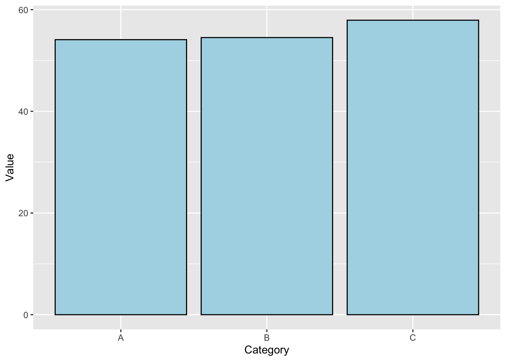
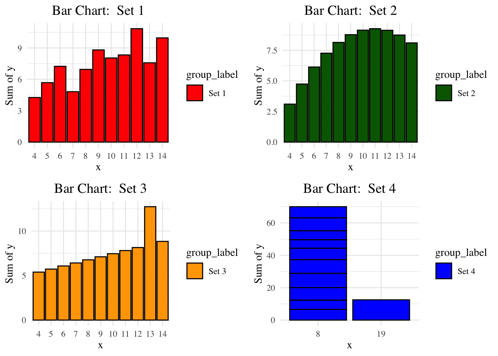
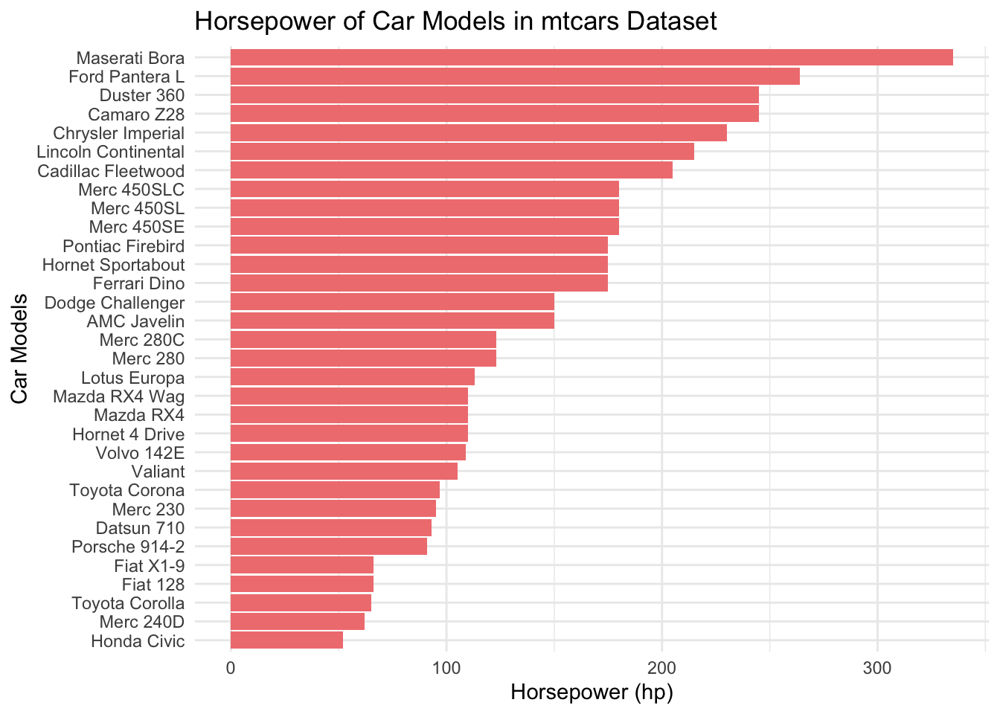
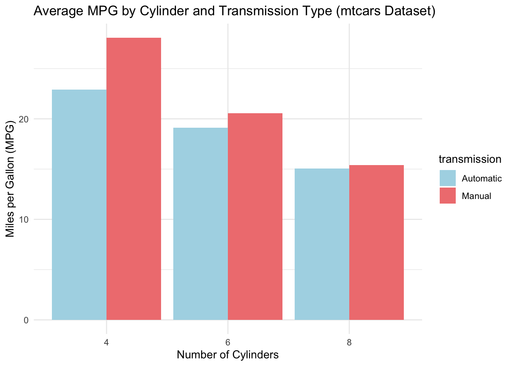

# Chart 1
# This dataset generation code was provided with assistance from ChatGPT
# Set seed for reproducibility
set.seed(123)
# Generate a dataset
df <- data.frame(
ID = 1:100, # IDs from 1 to 100
Category = sample(c("A", "B", "C"), 100, replace = TRUE), # Randomly assign categories
Value = round(runif(100, min = 10, max = 100), 2), # Random values between 10 and 100
Date = sample(seq(as.Date('2020-01-01'), as.Date('2021-01-01'), by="day"), 100, replace = TRUE) # Random dates
)
# View the first few rows of the dataset
head(df) ID Category Value Date
1 1 C 43.25 2020-10-28
2 2 C 98.58 2020-03-25
3 3 C 23.88 2020-12-30
4 4 B 18.19 2020-07-12
5 5 C 22.77 2020-04-16
6 6 B 72.10 2020-03-17library(ggplot2)
df_summary <- aggregate(Value ~ Category, df, mean)
ggplot(df_summary, aes(x = Category, y = Value)) +
geom_bar(stat = "identity", fill = "lightblue", color = "black")
theme_minimal() +
labs(title = "Average Value by Category", x = "Category", Y = "Value")List of 138
$ line :List of 6
..$ colour : chr "black"
..$ linewidth : num 0.5
..$ linetype : num 1
..$ lineend : chr "butt"
..$ arrow : logi FALSE
..$ inherit.blank: logi TRUE
..- attr(*, "class")= chr [1:2] "element_line" "element"
$ rect :List of 5
..$ fill : chr "white"
..$ colour : chr "black"
..$ linewidth : num 0.5
..$ linetype : num 1
..$ inherit.blank: logi TRUE
..- attr(*, "class")= chr [1:2] "element_rect" "element"
$ text :List of 11
..$ family : chr ""
..$ face : chr "plain"
..$ colour : chr "black"
..$ size : num 11
..$ hjust : num 0.5
..$ vjust : num 0.5
..$ angle : num 0
..$ lineheight : num 0.9
..$ margin : 'margin' num [1:4] 0points 0points 0points 0points
.. ..- attr(*, "unit")= int 8
..$ debug : logi FALSE
..$ inherit.blank: logi TRUE
..- attr(*, "class")= chr [1:2] "element_text" "element"
$ title : chr "Average Value by Category"
$ aspect.ratio : NULL
$ axis.title : NULL
$ axis.title.x :List of 11
..$ family : NULL
..$ face : NULL
..$ colour : NULL
..$ size : NULL
..$ hjust : NULL
..$ vjust : num 1
..$ angle : NULL
..$ lineheight : NULL
..$ margin : 'margin' num [1:4] 2.75points 0points 0points 0points
.. ..- attr(*, "unit")= int 8
..$ debug : NULL
..$ inherit.blank: logi TRUE
..- attr(*, "class")= chr [1:2] "element_text" "element"
$ axis.title.x.top :List of 11
..$ family : NULL
..$ face : NULL
..$ colour : NULL
..$ size : NULL
..$ hjust : NULL
..$ vjust : num 0
..$ angle : NULL
..$ lineheight : NULL
..$ margin : 'margin' num [1:4] 0points 0points 2.75points 0points
.. ..- attr(*, "unit")= int 8
..$ debug : NULL
..$ inherit.blank: logi TRUE
..- attr(*, "class")= chr [1:2] "element_text" "element"
$ axis.title.x.bottom : NULL
$ axis.title.y :List of 11
..$ family : NULL
..$ face : NULL
..$ colour : NULL
..$ size : NULL
..$ hjust : NULL
..$ vjust : num 1
..$ angle : num 90
..$ lineheight : NULL
..$ margin : 'margin' num [1:4] 0points 2.75points 0points 0points
.. ..- attr(*, "unit")= int 8
..$ debug : NULL
..$ inherit.blank: logi TRUE
..- attr(*, "class")= chr [1:2] "element_text" "element"
$ axis.title.y.left : NULL
$ axis.title.y.right :List of 11
..$ family : NULL
..$ face : NULL
..$ colour : NULL
..$ size : NULL
..$ hjust : NULL
..$ vjust : num 1
..$ angle : num -90
..$ lineheight : NULL
..$ margin : 'margin' num [1:4] 0points 0points 0points 2.75points
.. ..- attr(*, "unit")= int 8
..$ debug : NULL
..$ inherit.blank: logi TRUE
..- attr(*, "class")= chr [1:2] "element_text" "element"
$ axis.text :List of 11
..$ family : NULL
..$ face : NULL
..$ colour : chr "grey30"
..$ size : 'rel' num 0.8
..$ hjust : NULL
..$ vjust : NULL
..$ angle : NULL
..$ lineheight : NULL
..$ margin : NULL
..$ debug : NULL
..$ inherit.blank: logi TRUE
..- attr(*, "class")= chr [1:2] "element_text" "element"
$ axis.text.x :List of 11
..$ family : NULL
..$ face : NULL
..$ colour : NULL
..$ size : NULL
..$ hjust : NULL
..$ vjust : num 1
..$ angle : NULL
..$ lineheight : NULL
..$ margin : 'margin' num [1:4] 2.2points 0points 0points 0points
.. ..- attr(*, "unit")= int 8
..$ debug : NULL
..$ inherit.blank: logi TRUE
..- attr(*, "class")= chr [1:2] "element_text" "element"
$ axis.text.x.top :List of 11
..$ family : NULL
..$ face : NULL
..$ colour : NULL
..$ size : NULL
..$ hjust : NULL
..$ vjust : num 0
..$ angle : NULL
..$ lineheight : NULL
..$ margin : 'margin' num [1:4] 0points 0points 2.2points 0points
.. ..- attr(*, "unit")= int 8
..$ debug : NULL
..$ inherit.blank: logi TRUE
..- attr(*, "class")= chr [1:2] "element_text" "element"
$ axis.text.x.bottom : NULL
$ axis.text.y :List of 11
..$ family : NULL
..$ face : NULL
..$ colour : NULL
..$ size : NULL
..$ hjust : num 1
..$ vjust : NULL
..$ angle : NULL
..$ lineheight : NULL
..$ margin : 'margin' num [1:4] 0points 2.2points 0points 0points
.. ..- attr(*, "unit")= int 8
..$ debug : NULL
..$ inherit.blank: logi TRUE
..- attr(*, "class")= chr [1:2] "element_text" "element"
$ axis.text.y.left : NULL
$ axis.text.y.right :List of 11
..$ family : NULL
..$ face : NULL
..$ colour : NULL
..$ size : NULL
..$ hjust : num 0
..$ vjust : NULL
..$ angle : NULL
..$ lineheight : NULL
..$ margin : 'margin' num [1:4] 0points 0points 0points 2.2points
.. ..- attr(*, "unit")= int 8
..$ debug : NULL
..$ inherit.blank: logi TRUE
..- attr(*, "class")= chr [1:2] "element_text" "element"
$ axis.text.theta : NULL
$ axis.text.r :List of 11
..$ family : NULL
..$ face : NULL
..$ colour : NULL
..$ size : NULL
..$ hjust : num 0.5
..$ vjust : NULL
..$ angle : NULL
..$ lineheight : NULL
..$ margin : 'margin' num [1:4] 0points 2.2points 0points 2.2points
.. ..- attr(*, "unit")= int 8
..$ debug : NULL
..$ inherit.blank: logi TRUE
..- attr(*, "class")= chr [1:2] "element_text" "element"
$ axis.ticks : list()
..- attr(*, "class")= chr [1:2] "element_blank" "element"
$ axis.ticks.x : NULL
$ axis.ticks.x.top : NULL
$ axis.ticks.x.bottom : NULL
$ axis.ticks.y : NULL
$ axis.ticks.y.left : NULL
$ axis.ticks.y.right : NULL
$ axis.ticks.theta : NULL
$ axis.ticks.r : NULL
$ axis.minor.ticks.x.top : NULL
$ axis.minor.ticks.x.bottom : NULL
$ axis.minor.ticks.y.left : NULL
$ axis.minor.ticks.y.right : NULL
$ axis.minor.ticks.theta : NULL
$ axis.minor.ticks.r : NULL
$ axis.ticks.length : 'simpleUnit' num 2.75points
..- attr(*, "unit")= int 8
$ axis.ticks.length.x : NULL
$ axis.ticks.length.x.top : NULL
$ axis.ticks.length.x.bottom : NULL
$ axis.ticks.length.y : NULL
$ axis.ticks.length.y.left : NULL
$ axis.ticks.length.y.right : NULL
$ axis.ticks.length.theta : NULL
$ axis.ticks.length.r : NULL
$ axis.minor.ticks.length : 'rel' num 0.75
$ axis.minor.ticks.length.x : NULL
$ axis.minor.ticks.length.x.top : NULL
$ axis.minor.ticks.length.x.bottom: NULL
$ axis.minor.ticks.length.y : NULL
$ axis.minor.ticks.length.y.left : NULL
$ axis.minor.ticks.length.y.right : NULL
$ axis.minor.ticks.length.theta : NULL
$ axis.minor.ticks.length.r : NULL
$ axis.line : list()
..- attr(*, "class")= chr [1:2] "element_blank" "element"
$ axis.line.x : NULL
$ axis.line.x.top : NULL
$ axis.line.x.bottom : NULL
$ axis.line.y : NULL
$ axis.line.y.left : NULL
$ axis.line.y.right : NULL
$ axis.line.theta : NULL
$ axis.line.r : NULL
$ legend.background : list()
..- attr(*, "class")= chr [1:2] "element_blank" "element"
$ legend.margin : 'margin' num [1:4] 5.5points 5.5points 5.5points 5.5points
..- attr(*, "unit")= int 8
$ legend.spacing : 'simpleUnit' num 11points
..- attr(*, "unit")= int 8
$ legend.spacing.x : NULL
$ legend.spacing.y : NULL
$ legend.key : list()
..- attr(*, "class")= chr [1:2] "element_blank" "element"
$ legend.key.size : 'simpleUnit' num 1.2lines
..- attr(*, "unit")= int 3
$ legend.key.height : NULL
$ legend.key.width : NULL
$ legend.key.spacing : 'simpleUnit' num 5.5points
..- attr(*, "unit")= int 8
$ legend.key.spacing.x : NULL
$ legend.key.spacing.y : NULL
$ legend.frame : NULL
$ legend.ticks : NULL
$ legend.ticks.length : 'rel' num 0.2
$ legend.axis.line : NULL
$ legend.text :List of 11
..$ family : NULL
..$ face : NULL
..$ colour : NULL
..$ size : 'rel' num 0.8
..$ hjust : NULL
..$ vjust : NULL
..$ angle : NULL
..$ lineheight : NULL
..$ margin : NULL
..$ debug : NULL
..$ inherit.blank: logi TRUE
..- attr(*, "class")= chr [1:2] "element_text" "element"
$ legend.text.position : NULL
$ legend.title :List of 11
..$ family : NULL
..$ face : NULL
..$ colour : NULL
..$ size : NULL
..$ hjust : num 0
..$ vjust : NULL
..$ angle : NULL
..$ lineheight : NULL
..$ margin : NULL
..$ debug : NULL
..$ inherit.blank: logi TRUE
..- attr(*, "class")= chr [1:2] "element_text" "element"
$ legend.title.position : NULL
$ legend.position : chr "right"
$ legend.position.inside : NULL
$ legend.direction : NULL
$ legend.byrow : NULL
$ legend.justification : chr "center"
$ legend.justification.top : NULL
$ legend.justification.bottom : NULL
$ legend.justification.left : NULL
$ legend.justification.right : NULL
$ legend.justification.inside : NULL
$ legend.location : NULL
$ legend.box : NULL
$ legend.box.just : NULL
$ legend.box.margin : 'margin' num [1:4] 0cm 0cm 0cm 0cm
..- attr(*, "unit")= int 1
$ legend.box.background : list()
..- attr(*, "class")= chr [1:2] "element_blank" "element"
$ legend.box.spacing : 'simpleUnit' num 11points
..- attr(*, "unit")= int 8
[list output truncated]
- attr(*, "class")= chr [1:2] "theme" "gg"
- attr(*, "complete")= logi TRUE
- attr(*, "validate")= logi TRUE geom_text(aes(label = round(Value, 2)), vjust = -0.5)mapping: label = ~round(Value, 2)
geom_text: parse = FALSE, check_overlap = FALSE, size.unit = mm, na.rm = FALSE
stat_identity: na.rm = FALSE
position_identity # Chart 2
# Chatgpt was used to assist with the coding
# Load necessary libraries
library(ggplot2)
library(gridExtra)
# Reshape the Anscombe data for ggplot2 (long format)
anscombe_long <- data.frame(
x = c(anscombe$x1, anscombe$x2, anscombe$x3, anscombe$x4),
y = c(anscombe$y1, anscombe$y2, anscombe$y3, anscombe$y4),
group = rep(c("Set 1", "Set 2", "Set 3", "Set 4"), each = nrow(anscombe))
)
# Create a new plotting function for bar charts
gg_anscombe_bar <- function(data, group_label) {
ggplot(data, aes(x = as.factor(x), y = y)) + # Convert x to factor for bar chart
geom_bar(stat = "identity", aes(fill = group_label), color = "black") + # Create bars
labs(title = paste("Bar Chart: ", group_label), x = "x", y = "Sum of y") +
theme_minimal(base_family = "serif") + # Set font to serif
theme(plot.title = element_text(hjust = 0.5, size = 14)) # Center the title
}
# Bar Plot 1
bp1 <- gg_anscombe_bar(anscombe_long[anscombe_long$group == "Set 1", ], "Set 1") +
scale_fill_manual(values = "red")
# Bar Plot 2
bp2 <- gg_anscombe_bar(anscombe_long[anscombe_long$group == "Set 2", ], "Set 2") +
scale_fill_manual(values = "darkgreen")
# Bar Plot 3
bp3 <- gg_anscombe_bar(anscombe_long[anscombe_long$group == "Set 3", ], "Set 3") +
scale_fill_manual(values = "orange")
# Bar Plot 4
bp4 <- gg_anscombe_bar(anscombe_long[anscombe_long$group == "Set 4", ], "Set 4") +
scale_fill_manual(values = "blue")
# Arrange the four bar charts into a grid
grid.arrange(bp1, bp2, bp3, bp4, nrow = 2)
# Chart 3
library(ggplot2)
# Summarize the dataset
# We'll use 'mtcars' dataset and create a bar chart of car models vs their horsepower (hp)
data <- mtcars
data$car_model <- rownames(data)
# Create a horizontal bar chart
ggplot(data, aes(x = hp, y = reorder(car_model, hp))) +
geom_bar(stat = "identity", fill = "lightcoral") +
labs(title = "Horsepower of Car Models in mtcars Dataset",
x = "Horsepower (hp)", y = "Car Models") +
theme_minimal()
# Citation: This code was generated using ChatGPT.
# Chart 4
data <- mtcars
data$transmission <- ifelse(data$am == 0, 'Automatic', 'Manual')
# Summarize data: Average mpg by number of cylinders and transmission type
data_summary <- aggregate(mpg ~ cyl + transmission, data, mean)
# Create a grouped column chart
ggplot(data_summary, aes(x = factor(cyl), y = mpg, fill = transmission)) +
geom_bar(position = "dodge", stat = "identity") +
labs(title = "Average MPG by Cylinder and Transmission Type (mtcars Dataset)",
x = "Number of Cylinders", y = "Miles per Gallon (MPG)") +
theme_minimal() +
scale_fill_manual(values = c("Automatic" = "lightblue", "Manual" = "lightcoral"))
# Citation: This code was generated using ChatGPT.